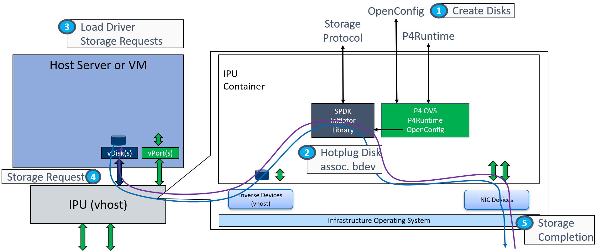

Infrastructure Application Interface
Virtual Devices: Offered to the tenant instance, storage controller device types may include:
- virtio-blk
- virtio-scsi
- NVMe
Virtual Device Management: Interface to orchestration to hotplug virtual devices into instances, or associate a VF with an emulated device in an instance using vDPA. In IaaS we want to define a set of generic virtual devices that are offered to the tenant. The tenant instance could be a VM or a physical machine (bare metal hosting). In both cases the semantics of how a virtual device is ‘added’ to an instance is using PCIe hotplug, exactly the same as KVM.
The steps to hotplug a new device is as follows:

- Over OpenConfig, create a new virtual storage controller device, specifying the device type, number of queues, etc.
- The storage controller has one or more attached volumes. The maximum number of volumes is dependent on the device type. Each volume is associated with an SPDK block device (bdev) that implements the actual storage backing the volume.
- The tenant instance loads the corresponding driver for that device, and can then send storage requests to volumes attached to the storage controller that will be processed by the SPDK storage application..
- Storage requests (reads, writes, flushes) directed to a volume will arrive at the SPDK target layer and be translated and forwarded to its associated SPDK bdev. SPDK bdevs can be of many different types, depending on the type of backing storage for the volume. Examples include NVMe over TCP, NVMe over RDMA, or Ceph RBD.
- The SPDK bdev module responsible for a given bdev type forwards the storage request to the bdev’s associated remote target. For example, the NVMe/TCP bdev module is responsible for establishing TCP connections to the remote NVMe/TCP target and sending NVMe CONNECT commands to associate those connections with the NVMe subsystem containing the volume associated with the tenant’s virtual storage controller. It also constructs NVMe commands for the storage request(s) and sends them (along with any write data) to the remote target over the previously established TCP socket.
- Eventually the remote target responds with the completion for the request (along with any read data). The SPDK bdev module consumes the response and once the entire completion is received, notifies the upper layers of the SPDK storage application.
- Once the SPDK target layer receives notification of the completion, any read data is transferred to the tenant’s memory space as specified by the original storage request. A device type-specific completion is also posted to the tenant’s memory space.
- The tenant can now process the completion of its storage request, finishing out the operation.
An extension to the bare metal host server usage is to run VMs inside of it and be able to support VMs inside of that host. In this (nested) case vDPA (virtio data path acceleration) is used to connect the infrastructure directly into the VM while still preserving Live Migration. In this case the physical function is still hotplugged into the server, at which point the host server sets up a number of VFs that can be associated with emulated devices inside VMs. This has a similar flow as before, except that the port creation config needs to include which VF to use, and this VF is not hotplugged into the VM, the VM devices remain emulated and are accelerated using vDPA.
For supporting storage flows with Live Migration care must be taken not to lose any requests or completions since the virtio drivers are assuming that the connection between requests and completions is completely reliable and is unable to recover from lost transactions.

- Over OpenConfig, create a new virtual storage controller device, specifying the PF and VF # in addition to the type, number of queues, etc. This assumes that the corresponding PF has already been hotplugged into the host.
- The storage controller has one or more attached volumes. Storage requests directed to a volume will arrive at the SPDK target layer and be translated and forwarded to its associated SPDK bdev.
- An emulated driver in the VM (either existing or newly hotplug’d in) is associated with the VF in the host (Note: the VF is not passed through into the VM). vDPA ensures that data is moved in and out of the VM using the device virtual function, providing a direct connection between VM and infrastructure (high performance, low latency). vDPA can also enable Live Migration when needed on this server.
- Steps 3-7 from above are the same here, except that now the VF is used to move requests/completions in/out of the tenant memory.
Target Abstraction Interface
P4 Programs: (Future Work). Currently the pipeline for storage cannot be described in P4, so this work is left inside SPDK in software.
Fixed Function Tables: For non-P4 functionality configurable through Openconfig, the kernel and/or SAI. This includes the physical ports, virtual devices and QoS configuration tables inside the datapath.
Table Driven Interface: Allows the P4 pipeline to be implemented in different ways, and for the target pipeline implementation to be chosen at runtime.
The Target Abstraction Interface re-uses the Table Driven Interface (TDI) from networking to provide an abstraction layer to allow the storage dataplane to be implemented in different ways, and for the target pipeline implementation to be chosen at runtime. Since the pipeline remains the software the differences in implementation revolve around whether the vhost layer logic is implemented in hardware or software.
Virtual Device Table
To implement the virtual-device openconfig objects the TDI includes a table of virtual devices that lists out all of the currently active virtual devices and their associated configuration. The name must be unique and is used as a key in the list.
| Device Name | Type | Configuration |
|---|---|---|
| Example1 | ‘virtio-net’ | virtio-net-config1 |
| Example2 | ‘virtio-blk’ | virtio-blk-config1 |
| … |
In the target it needs to be capable to hotplug or enable a device based on entries being populated in this table. In software targets qemu is used to hotplug new devices into VMs, while hardware hypervisors are able to hotplug devices directly into the attached host. The virtual device table abstracts the implementation of how these devices are added into their hosts/guests.
Build Script
The following URLs can be helpful for building and configuring SPDK NVMe/TCP as a representative block storage protocol between an initiator and target.